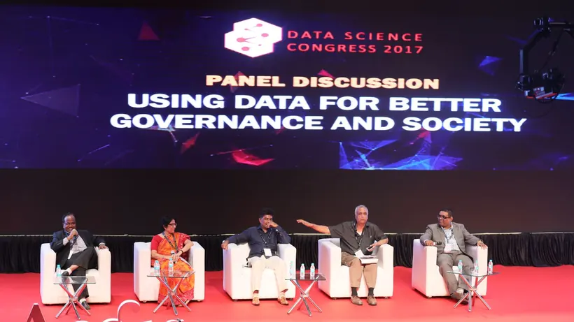

Shri Sudeep Shrivastava
Joint Secretary, Ministry of Electronics & Information Technology (MeitY) and COO, IndiaAI Mission
Presenting the Government of India’s AI initiatives under the IndiaAI Mission.

20–21 November 2026World Trade Center, Mumbai
Bring your Ministry’s AI initiative to the national stage. Two days, one platform: show what it does for citizens, and meet the people who can help it grow.
Ministries, Departments, State Governments and PSUs are using AI to deliver public services better and to serve citizens in Indian languages. We bring that work into the spotlight.
Real deployments. Measurable outcomes. Solutions that can be repeated and scaled for India’s development priorities.
Senior government officers presenting their initiatives include:
Joint Secretary, Ministry of Electronics & Information Technology (MeitY) and COO, IndiaAI Mission
Presenting the Government of India’s AI initiatives under the IndiaAI Mission.

Deputy Secretary, Ministry of Tribal Affairs
Presenting “Adi Vaani: Taking India’s Tribal Languages from the Margins to the Mainstream with AI.”
 Hon’ble Shri Chirag PaswanUnion Minister of Food Processing Industries
Hon’ble Shri Chirag PaswanUnion Minister of Food Processing Industries Hon’ble Shri Chandrakant Dada PatilMinister of Higher and Technical Education, Maharashtra
Hon’ble Shri Chandrakant Dada PatilMinister of Higher and Technical Education, Maharashtra Hon’ble Shri Dattatray BharaneMinister of Agriculture, Maharashtra
Hon’ble Shri Dattatray BharaneMinister of Agriculture, Maharashtra Shri K.K. SinghJoint Secretary, MeitY
Shri K.K. SinghJoint Secretary, MeitY Shri Virendra Singh (IAS)Secretary, Electronics, IT and AI Department, Maharashtra
Shri Virendra Singh (IAS)Secretary, Electronics, IT and AI Department, Maharashtra Akshay YadavaDirector, UIDAI
Akshay YadavaDirector, UIDAI Shri Prakash KumarAdditional Director, MeitY
Shri Prakash KumarAdditional Director, MeitY Shri Vivek Khandekar (IFS)Principal Chief Conservator of Forests (Social Forestry), Maharashtra
Shri Vivek Khandekar (IFS)Principal Chief Conservator of Forests (Social Forestry), MaharashtraChoose one or more.

Present and demonstrate your AI initiatives, flagship projects and achievements.

Share your vision, experience and lessons on AI adoption.

Discuss challenges, solutions and collaboration with industry leaders and startups.
Photos from Data Science Congress, the predecessor to Bharat AI Innovation.
Two places for government at the exhibition.
For Ministries and Departments
A dedicated space in the exhibition area during both days. Show your AI initiatives, technology platforms and achievements to delegates.
Ask for a place in the pavilionFor incubation centres under Ministries
Bring the AI startups from your Ministry’s incubation centres. Let them show their work to organisations deploying AI, senior officers and CEOs.
Showcase your startupsWe welcome initiatives across all sectors.
Citizen services, grievance redressal, policing, disaster management, e-Courts, finance, taxation, defence and elections.
Precision farming, fisheries, dairy, food processing, public distribution, rural development, water management, weather forecasting and land records.
Healthcare, AYUSH, women and child development, social justice, tribal affairs, minority affairs, disability inclusion, labour, youth and sports.
Education, skilling, scientific research, space, atomic energy, culture, broadcasting and Indian languages.
Commerce, MSMEs, textiles, mining, steel, chemicals, pharmaceuticals, petroleum, banking and startups.
Highways, railways, aviation, ports, smart cities, power, renewable energy, environmental protection and tourism.
IndiaAI, telecommunications, postal services, digital public infrastructure, datasets, compute infrastructure, cybersecurity and responsible AI.
An AI solution already deployed, a successful pilot, an innovative use case or a new initiative under development: we welcome the chance to bring it to the national stage.
Share what you have learned, find solutions to common challenges, explore partnerships and scale what works across government and industry.
We would be honoured to showcase your Ministry’s or Department’s AI work alongside other government-led innovations.
Prefer email? Write to info@bharataiinnovation.com or call +91 89765 80367.
Our team will contact your nodal officer about the format and schedule.
No. An AI solution already deployed, a successful pilot, an innovative use case or a new initiative under development are all welcome.
Keynote and panel participation for Secretary-level officers is complimentary, and so are closed-door roundtables. For the other formats, our team will share the details with your nodal officer.
Our team will coordinate with your nodal officer on the participation format and the schedule.
Yes. Nominate your incubation centre and name its startups in your description. Our team will coordinate with your nodal officer.
No. Bharat AI Innovation is organised by Aegis Knowledge Trust. Ministries, Departments and PSUs take part as speakers and exhibitors.
Yes. The Delhi edition is a separate event on 29–30 July 2027 at Bharat Mandapam, New Delhi. Nominate your initiative and mention Delhi in your description.